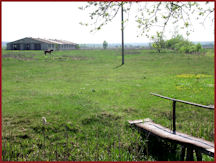
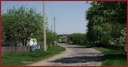
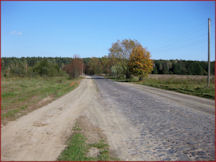
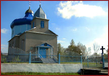
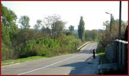
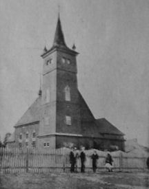
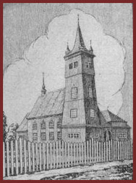
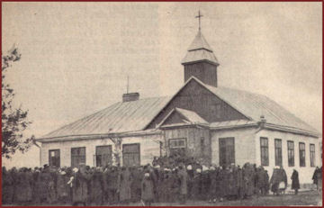

{kind=link}
{kind=link}

- courtesy of Jerry Frank
- courtesy of Jerry Frank
- courtsy of Jerry Frank
{kind=link}
{kind=link}
{kind=link}
- courtesy of Jerry Frank
- courtesy ofBrent Zellmer
- courtesy of Brent Zellmer
{kind=link}
{kind=link}
- courtesy of Brent Zellmer
WW II.
{kind=link}
The following are pictures from the Tutschin Parish. Click on the thumbnail view for an enlarged view of the picture.
|  | |
|||
| Solomka, also known as Friedrichsdorf, north of Rowno, west of Kostopol. Hydro poles are made of concrete. - courtesy of Jerry Frank |
Local residents say the old German cemetery at Solomka is near this unused Soviet era barn southwest of the village - probably to the right of the small stand of trees. No markers remain at the site and no attempt was made to find it. - courtesy of Jerry Frank |
Small church recently built in Solomka. Not sure if it is Baptist or Pentacostal. - courtsy of Jerry Frank |
||
|  |  |  | ||
| Solomka street, cobblestone construction, not well maintained and very rough. - courtesy of Jerry Frank |
Typical road in this region, very rough cobblestone with sharp stones. It is often necessary to drive on the shoulder of the road as shown here or through the field. It can take over an hour to drive 12 km on such a road. - courtesy ofBrent Zellmer |
Orthodox church at Berestowiec. - courtesy of Brent Zellmer |
||
|  |  |  | ||
| Horyn River crossing at Aleksandria. Road conditions a bit better here. - courtesy of Brent Zellmer |
||||
| Kostopol Lutheran Church before WW II. |
Kostopol Lutheran Church, from a June 1936 calender. (Enlargement not available.) | |||
|  | ||||
| Church and school at Kuty Zalesie. | ||||
|
||||